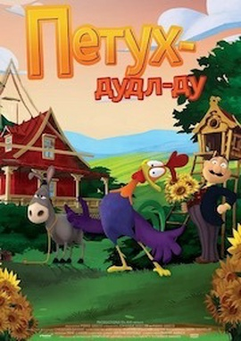
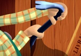
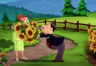
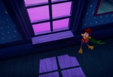
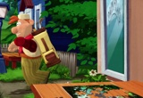
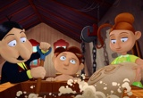
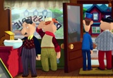

Киноман
Кино-мир фильмов

Название: Петух Дудл-Ду
Возрастной рейтинг: 18+
Страна: Канада
Год: 2014
Жанр: мультфильм, семейный
Режиссёры: Кристофер Смит
Актёры: Шон Бин, Эдди Редмейн, Кэрис Ван Хутен, Дэвид Уорнер,
Кимберли Никсон, Тим МакИннерни, Энди Нимэн, Джон Линч,
Джонни Хэррис, Дэвид Мастерсон
В городке Сан-Виктор царит порядок и процветание, что не может не радовать педантичного мэра. Он ставит благополучие своего городка в заслугу любимому петуху за то, что тот на протяжении семи лет будит своих горожан ровно в 4 утра, тем самым давая им достаточное количество времени везде поспевать в своих делах. Но столь раннее пробуждение под петушиный крик раздражает жителей и они принимают решение передать петуха в соседний городок Сан-Бенуа, обменяв его на осла в надежде, что последний принесет им удачу. Вместо ожидаемого успеха, городок предается лени, люди бездельничают в праздности проводя своё время. Такое положение вещей весьма огорчает мэра и небольшая команда из его активных почитателей отправляются в Сан-Бенуа, с намерением вернуть петуха обратно...
     